Overview
This page will cover the 3dsMax pipeline for getting vegetation assets with touch bending into CRYENGINE.
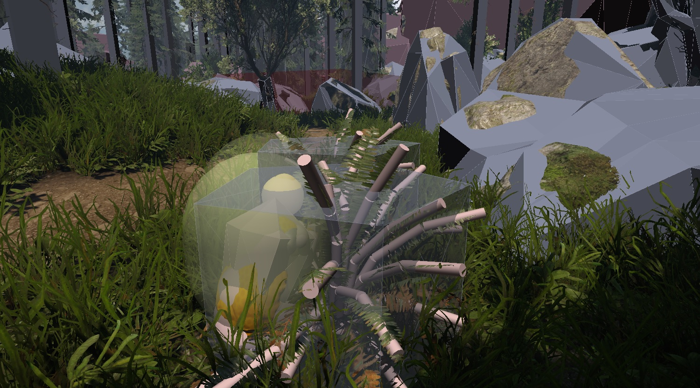
Pic1: Touch Bending in action (with physics debug info displayed: F10 or p_draw_helper=1)
Tutorial Files
Source 3dsMax scene with exported CRYENGINE files:
Prerequisites for this Tutorial
Before you continue with this tutorial, make sure to have read and understood the following;
- How to Install CryMaxTools
- The Basic CRYENGINE 3dsMax Workflow
- CRYENGINE Exporter
- 3dsMax Unit Scale to Match up With CRYENGINE Unit System
Helpful Information
Make sure to keep the following things in mind while you work on your asset:
- Touch Bending should only be used on bigger assets (bushes, ferns, trees etc...) not on grass.
- An no-collide proxy and a proper material setup for the assets are necessary for this system to work.
- Touch Bending can only be activated within the no-collide volume (will deactivate after approx. 5 seconds if no more input).
- Dummies only work when:
- they follow the naming convention rules and are linked to the object
- they are snapped to vertices of this object
- You do not need a branch setup for every leaf stem. You only need one or two branch setups, and let the engine handle the instancing on the other leaves.
- You have to use a minimum three dummies for each branch. Try to not exceed that number since three is enough for almost all situations.
- Use the CVar p_draw_helpers=1 or F10 in-game to visualize the physics debug info, see Pic1.
Initial 3dsMax setup
For this tutorial, we will be creating our asset in the following directory.
<Your_Project>\Assets\Objects\tutorial\vegetation\04\bush\touch_bending\
To begin with, we save our 3dsMax scene to this location. All our exported assets will be saved in there. Some of the textures that we use comes from an existing asset and the location of the existing asset will be provided later in the tutorial.
We will continue with the assumption that you have already created the asset, since this is not a 3dsMax modeling tutorial. We will begin with preparing the asset ready for CRYENGINE, assigning SubIds to the relevant polygons and configuring the material.
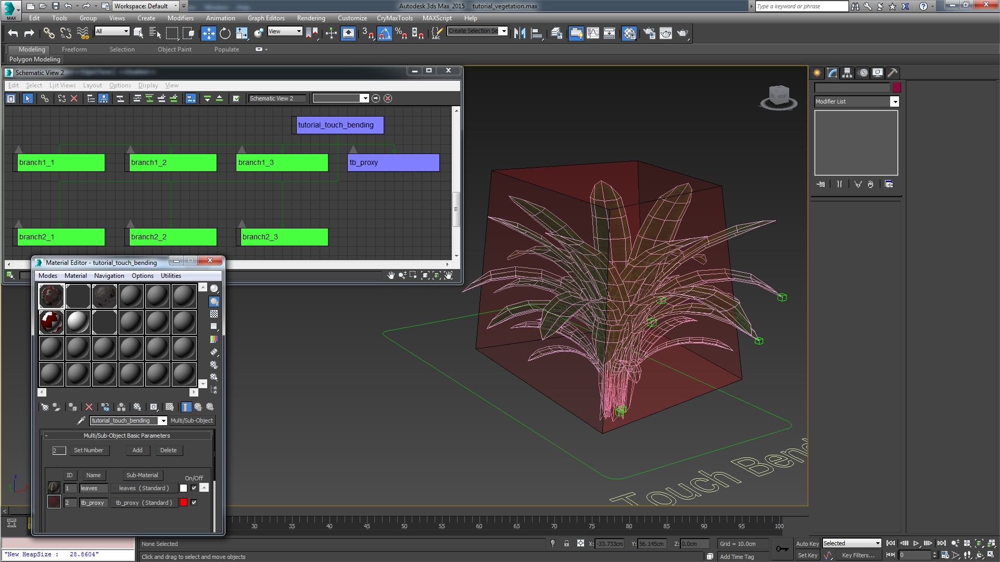
Pic2: 3dsMax overview of the finished model including the visible and no-collide mesh
Material
First, we will configure the material for the object. In 3dsMax, open the Material Editor. Create a new multi-material called tutorial_touch_bending, with two sub-materials. Name the first SubId leaves and the second one tb_proxy (tb = Touch Bending). The names of the SubIds are not important here. Just name them something specific to their purpose for your reference. See Pic2 and note the multi-material setup in the 3dsMax material editor.
Leaves Id Setup
Open the leaves sub-material (SubId1). Load in your diffuse map and normal map to the material paths. The diffuse map should contain an alpha map for the opacity. The normal map should also contain an alpha map for the PBS smoothness value.
The example file refers to the following textures already provided within the build:
<Your_Project>\Assets\objects\natural\bushes\ground_cover_fern\ground_cover_fernbush_diff.tif><Your_Project>\Assets\objects\natural\bushes\ground_cover_fern\ground_cover_fernbush_ddna.tif>
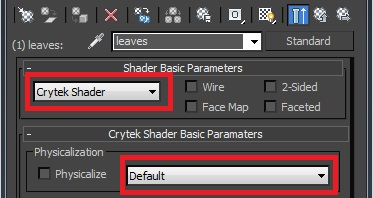
Pic3: Leaves SubId1 "Shader Basic Parameters"
In the Shader Basic Parameters:
- Select the Crytek Shader.
- In the Physicalization section, do not check the Physicalize check-box.
- In the next drop-down box select Default.
tb_proxy Id Setup
Open the tb_proxy sub-material (SubId2). This material will be used for the no-collide volume and defines the properties for this object. The no-collide parameter notifies the physics system on the geometry (detects if the player is within the boundary) to activate the Touch Bending system.
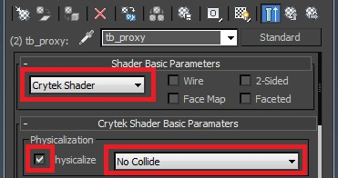
Pic4: tb_proxy SubId2 "Shader Basic Parameters" setup
In the Shader Basic Parameters section:
- Select the Crytek Shader.
- In the Physicalization section, check the Physicalize check-box.
- In the next drop-down box select No Collide.
Export the Material
Now we have configured the material for the object with two SubIds, one for the visible part of the material (leaves) and another to control the activation of the Touch Bending (tb_proxy).
- Make sure you have the correct material selected in the Material Editor (you need to be at the materials root level, not inside a SubId).
- In the CRYENGINE exporter, click the Create Material button. Save this into the same directory as the object:
<Your_Project>\Assets\Objects\tutorial\vegetation\04\bush\touch_bending\tutorial_touch_bending.mtl
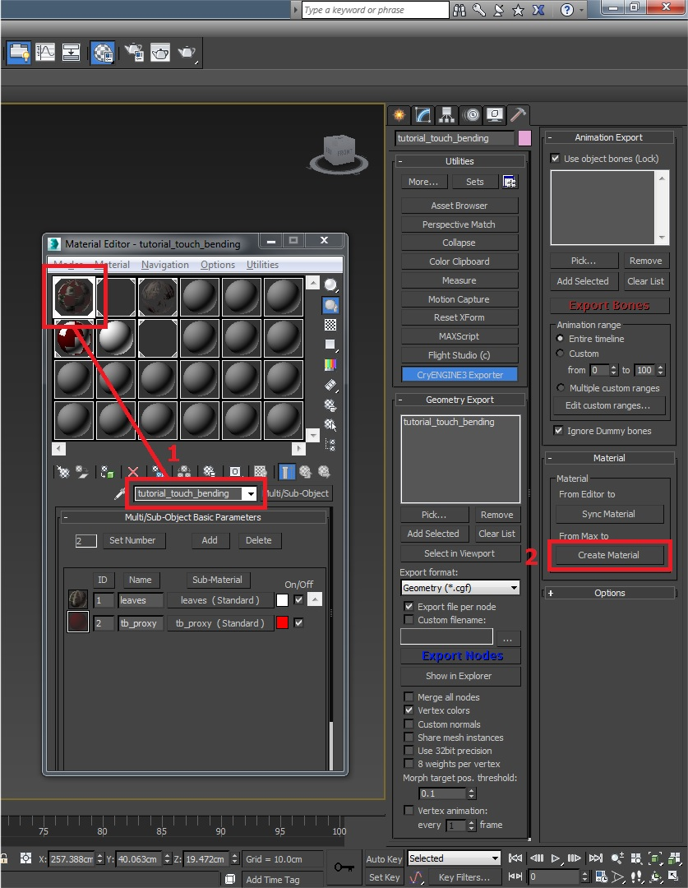
Pic5: Selecting the correct material for the texture export
Geometry
Our geometry for this tutorial is going to be a fern bush. This plant is perfect for explaining this type of technology. Create a single big leaf mesh for your fern bush and apply the material we just created to it (tutorial_touch_bending.mtl). Change its material SubId to 1 (leaves). Finally use the Unwrap UVW modifier to adjust its UV shell to only fit around one of the leaves on the texture.
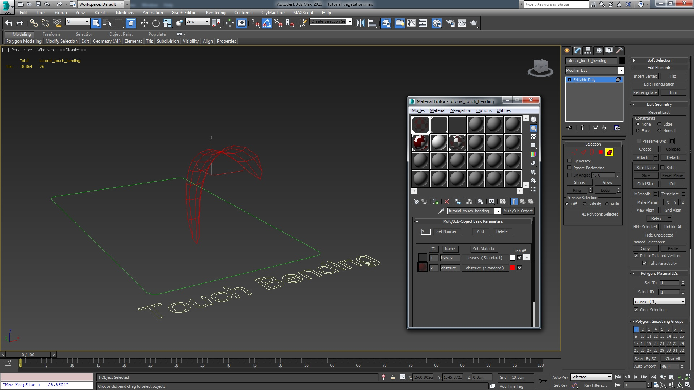
Pic6: Geometry of one leaf of the bush
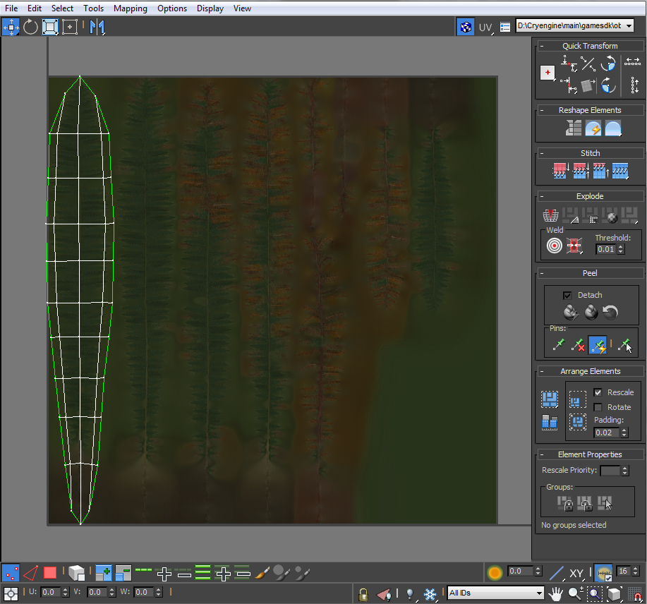
Pic7: UV Layout of the leaf in 3dsMax. Note the leaf UVs matching the underlying texture
Adding the Helper Dummies
Before we continue creating the rest of the plant by duplicating this leaf over and over, we will add on our helper dummy objects to the geometry. You can also add the dummy helpers at the end once the bush geometry is complete.
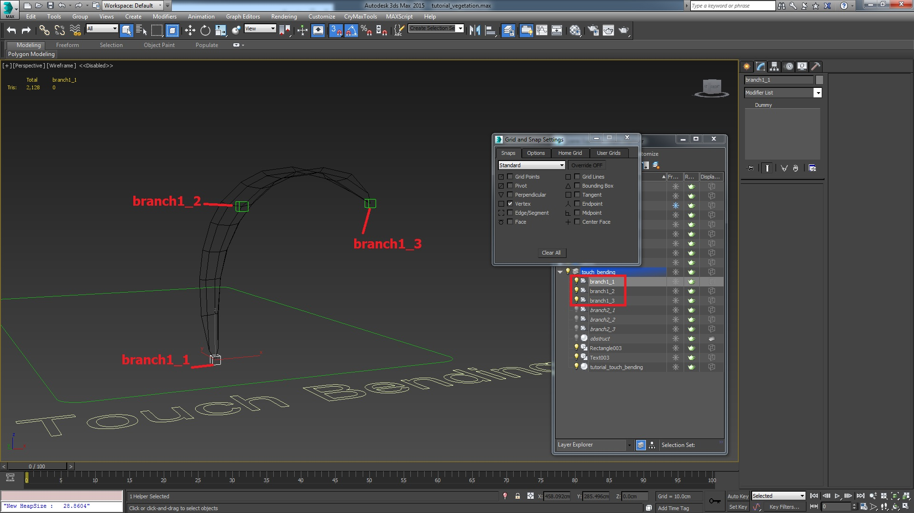
Pic8: Adding the helper dummies (Branch1_1, 1_2, 1_3) via vertex snapping to the geometry
As mentioned above, three dummy helpers are enough to control touch bending on 99% of all cases. One for the base, one roughly in the middle and finally one at the tip of the leaf.
- Vertex snap branch1_1 on a vertex somewhere on or near the leafs origin.
- Vertex snap branch1_2 on a vertex somewhere in the middle of the leaf.
- Vertex snap branch1_3 on a vertex somewhere on or near the leafs tip.
Branch Naming Convention
The branch naming convention we use is very important here. We define the logic of the branch via a numbering system. The naming convention is as follows:
- Branch1_1
- Branch1_2
- Branch1_3
Branch1 (the prefix to all the above) denotes that this is the Branch Name. The _1, _2, _3 are children of the branch.
A vegetation object can support multiple branches. To differentiate the working of the next branch, we increment the Branch Number. The next set of helpers for the second branch is as follows:
- Branch2_1
- Branch2_2
- Branch2_3
As before, Branch2 (the prefix to all the above), denotes that this is the Branch Name. The _1, _2, _3 are children of the branch.
Linking the Dummies to the Parent Object
The dummies are simply linked directly to the parent node (the geometry in this case).
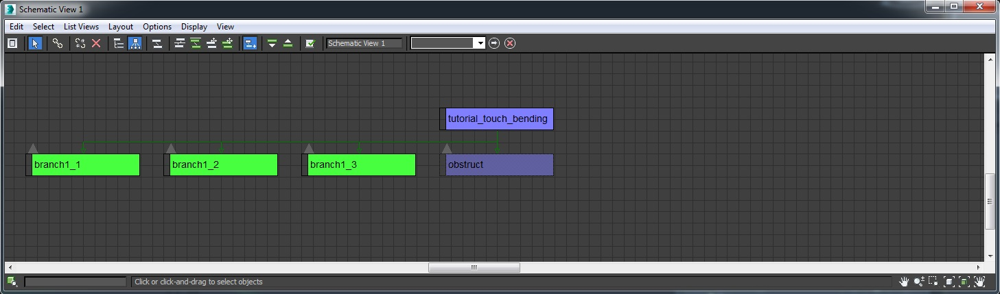
Pic9: Schematic view of the assets hierarchy
Duplicate the Leaf to Build the Bush
With the leaf selected in element edit mode; detach and make a clone of the geometry. Use the rotate, position and scale tools to add variation to the structure of the bush. Repeat enough times to make the object look realistic.
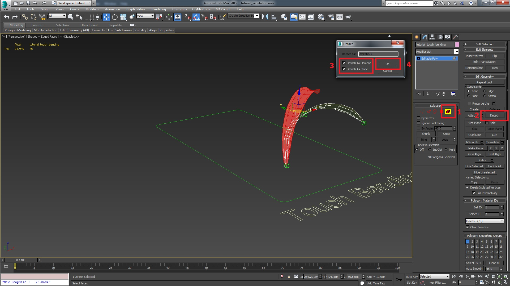
Pic10: Cloning the leaf geometry to make another copy using the "Detach" tool
Follow the below steps to clone the leaf geometry using the Detach tool:
- Enter Element mode with the object selected.
- Select the leaf geometry so its highlighted red, and click the Detach button to open the dialog window.
- Make sure to check the boxes Detach To Element (so its still part of this object) and also Detach As Clone (to make a copy of the original leaf).
- Click OK to confirm.
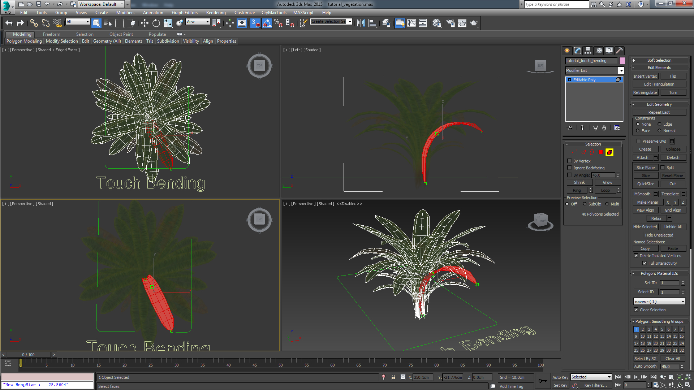
Pic11: Final leaf layout with the original leaf selected (red)
After repeating the above process several times to fill out the bush geometry, you should have a fern bush looking similar to the above picture.
Notice how we did not copy the branch setup. Only the polygons of the leaf were duplicated and re-positioned. You should still only have one Branch1_* chain in your bush asset.
Checking UV Layout
Going back into the Unwrap UVW modifier of the object, we will notice that all the UVs for all the multiple leaves we created are overlaid on top each other.
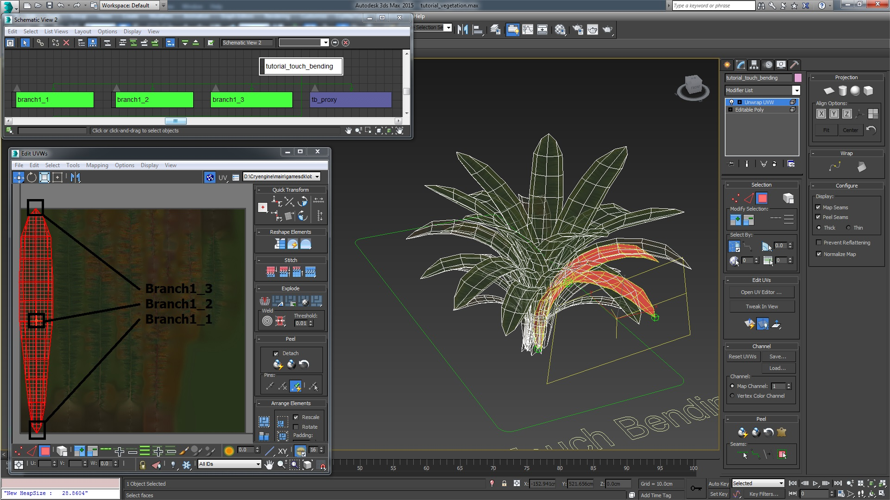
Pic12: Overview of the 3dsMax setup
Things to note in the above picture:
- Schematic view (top left): all the geometry is inside 1 node and the parent (highlighted white).
- There is only one bone chain setup, but every leaf is configured for touch bending.
- In the 3d viewport, we have the original leaf selected along with one of the duplicated leaves. Both share the same UV space (along with all the other leaves but not highlighted in the picture).
- Bottom left window (UV layout) - We have overlaid help text showing you roughly where the branch dummies exist.
Touch Bending Explanation
Adding Variation to the Leaves Geometry
As we just stated, so long as all the UV shells share the same space on the UV layout, they will inherit the branch setup associated with the first leaf we created.
At the moment every leaf element is of the same size, but with different positions and rotations applied to them. We have the option to also scale the geometry, remove faces safely and apply deformation modifiers to the leaf as well, while still preserving the dummy branch setup.
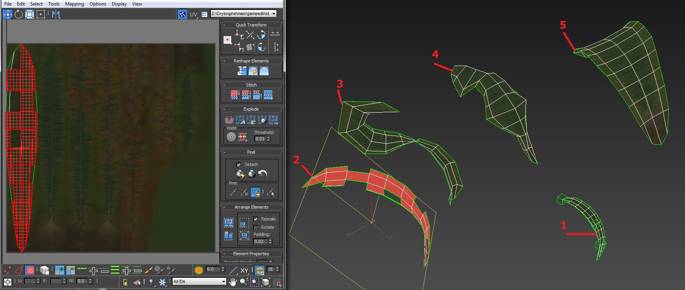
Pic13: Modified geometry but keeping the same UV layout
In the above picture on the left we can see all the UV shells stacked on top of each other in the UV layout. On the right side of the image we have the 3dsMax viewport. Below is a quick description of the numbered leaves:
- The original leaf (note the branch dummies in position).
- A modified leaf element that has some faces removed (also highlighted in the UV editor on the left).
- A modified leaf element that has a Twist modifier applied to the geometry.
- A modified leaf element where the vertices have been moved to pinch in certain areas of the leaves surface.
- A modified leaf element where its been scaled along the width to make a wider leaf.
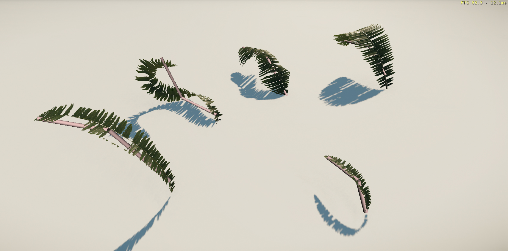
Pic14: Extra leaves with modified geometry, while still inheriting the Branch setup. (visualized with the physics debug CVar p_draw_helpers=1.)
Q: But won't this lead to my textures being either stretched or squashed in certain areas where I have made these changes?
A: Yes. This is the trade off, adding variation to the leaves geometry comes at the expense of having stretched or squashed textures in some areas.
So while applying this technique, do not modify the object with extreme geometry modifications. Keep in mind that you can not change the UVs.
In the examples above, we are using some very extreme cases where the stretching is very obvious. This is just to show that changes can be made and still will be able to work with the branch setup.
But if you change the UV layout to make the correct 1 to 1 ratio for the texture, you will break the touch bending setup because the new leaf will not be in the same position as the original leaf.
If you completely break the leaves geometry (remove all the polygons in the middle) to make 2 separate UV islands, it will also break the touch bending for that leaf.
Adding the Touch Bending Proxy Geometry (tb_proxy)
Now we have our bush setup to have every leaf active for the Touch Bending. The next step is to add the tb_proxy geometry to the asset which will act as the trigger zone for enabling the Touch Bending. As mentioned before, the Touch Bending is inactive until a physicalized object enters this tb_proxy zone which will then notify the physics system to activate the Touch Bending.
- Our object's material has already been setup to have the tb_proxy (SubId2).
- Create a simple shape that covers most of the bushes leaves.
- Enter the polygon/element edit mode and set SubId2 to all the faces of the tb_proxy .
- Name the object tb_proxy (for your reference only in the scene) and link it to the parent geometry.
- Apply the material tutorial_touch_bending to the to the tb_proxy (should enable see through mode and in red color similar to the Pic15)
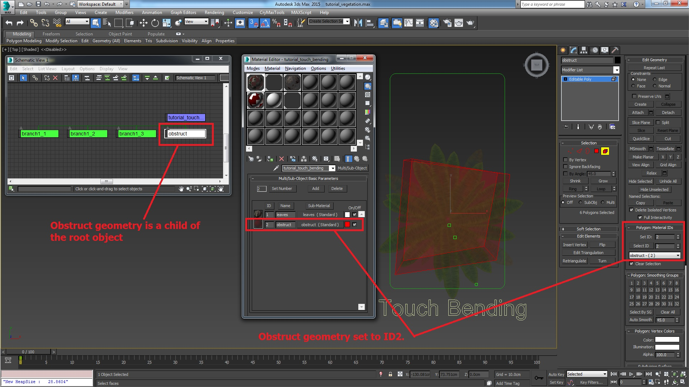
Pic15: Setting the tb_proxy to use SubId2
In the above picture, note how the tb_proxy geometry does not completely covers the leaves. This is an optimization where we allow the player to get close to the bush without activating the leaves with touch bending.
Remember that the player has to enter the tb_proxy to activate the touch bending. This isn't a required step, it's optional, but in our practice we found this to be the optimal setup in the asset creation.
Tweaking the Pivot Location
To help the bush fit into the scene when we add the vegetation object to a level, it is recommended to move the pivot up slightly so the base of the plant (actually sits underneath the terrain). This avoids the possibility of seeing the bottom of the bush hovering in the air.
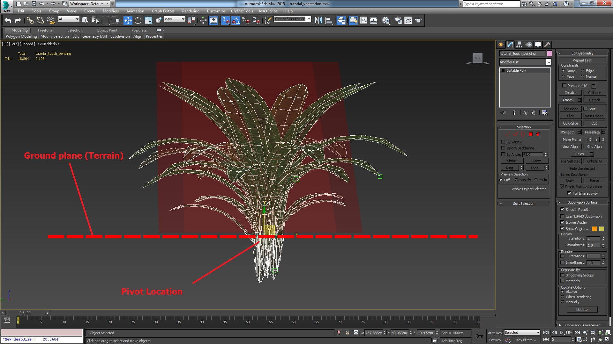
Pic16: Adjusting the pivot to sit higher in the asset
Adding Additional Branches for Touch Bending
When you need an additional, different looking leaf by covering its UV shell on one of the other leaves in the texture, you can apply an additional six variations on this one texture.
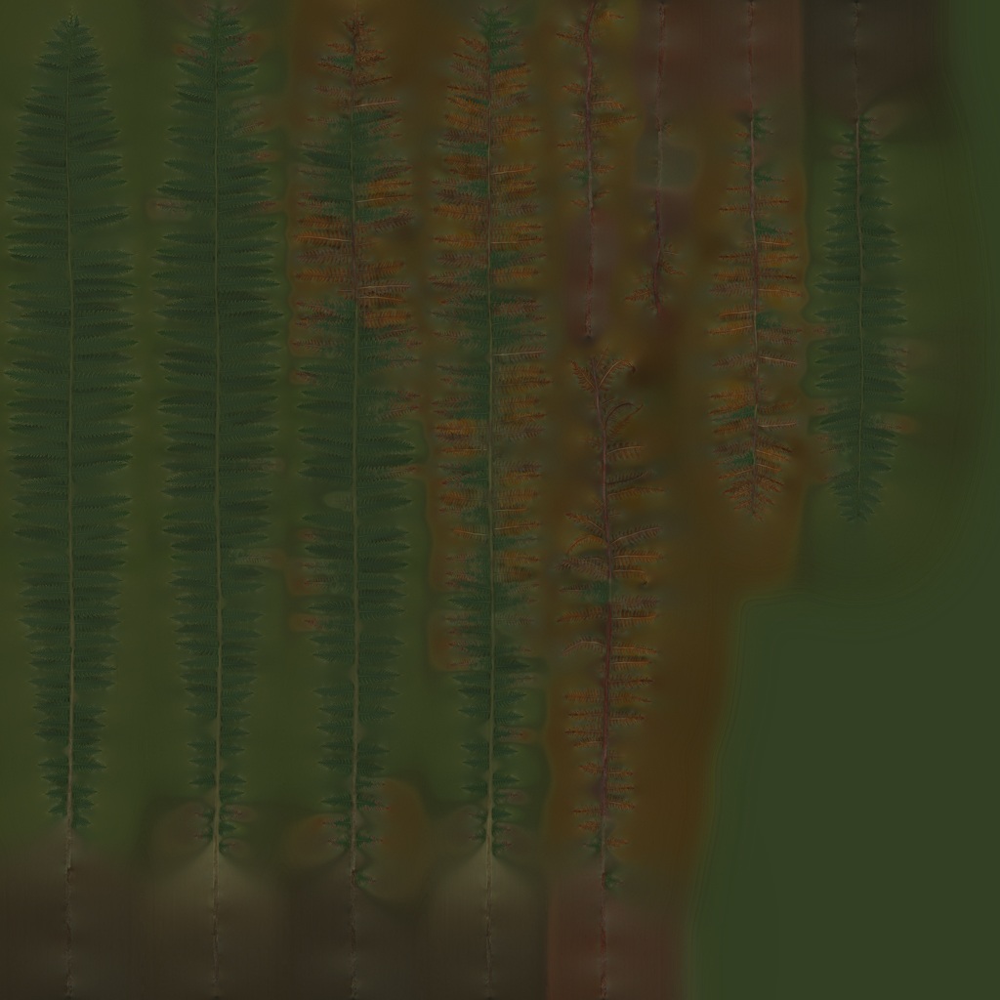
Pic17: Source Diffuse texture
Let's select a bunch of the other leaves that we have created in this asset and move their UV shell over to cover one of the other leaves in the texture. (Do not select the original one with the dummies attached.
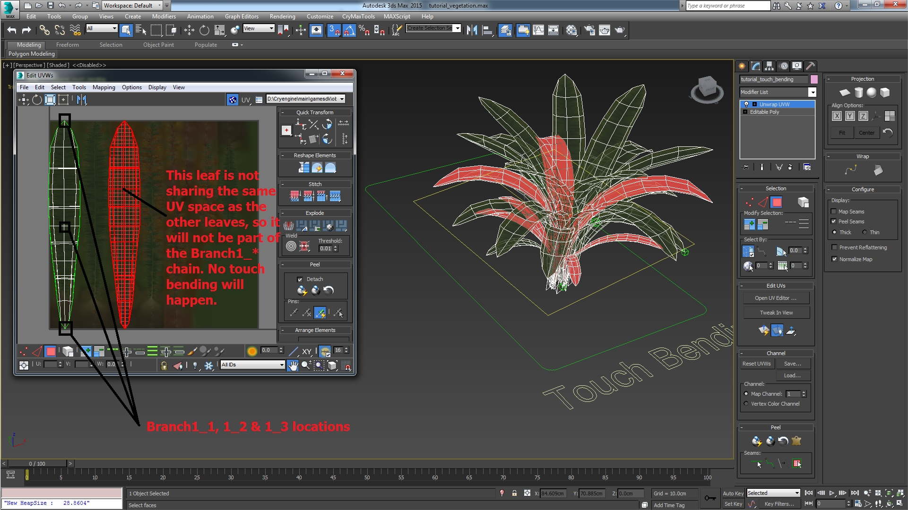
Pic18: Moving the UV shells of some of the leaves to a new location on the texture
Now the leaves are aligned in a new position, we want these leaves to benefit from the touch bending system. To do this we have to setup another Branch. Lets repeat the process we did before to create the bone chain but this time it will be called Branch2_*.
Add 3 x dummy helpers and name them accordingly...
- Branch2_1
- Branch2_2
- Branch2_3
Select one of the leaves that is in the new location on the UV layout, and hide all other geometry (only have one visible to make the positioning of the dummies easier). Position the branch dummies in the same areas, one at the base (Branch2_1), middle (Branch2_2) and top (Branch2_3) and make sure to vertex snap them to a local vertex.
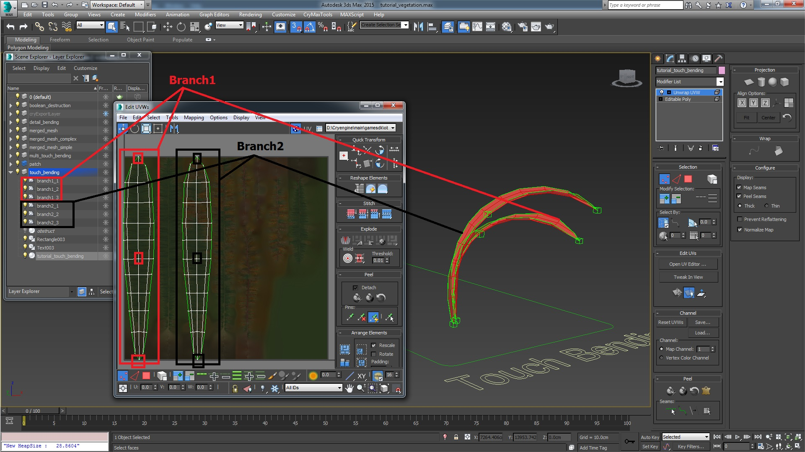
Pic19: Overview of the two Branch setups, explorer, UV editor, 3d view
Adding Additional Leaves Without Touch Bending
As a further optimization within the bush asset, not every leaf should be associated with a branch. So far in our asset we have 2 separate bone chains (Branch1_* and Branch2_*). All of the leaves are currently setup to have touch bending enabled from either one of these two branches.
- Select a few of the leaves and move them over (in the UV editor) to another location on the leaf texture.
- We will not create another bone chain this time, we will leave them as they are.
- This ensures are not connected to any branch*_* setup since they do not share the same UV space as the others and are just planes of geometry that are not physicalized.
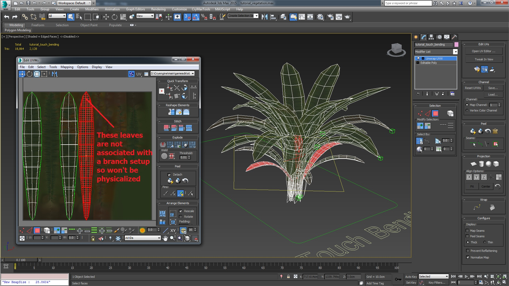
Pic20: 3 leaf variations, branch1_*, branch2_* and a third set that is not associated with a branch
In general, we try to aim for around a 50 / 50 mix of physicalized branches and non-physicalized ones. But it all depends on how the look of the asset is. Preferably the less physicalized branches the better (less CPU load) but you want enough in there to make the asset look and behave nicely. It's down to your descision on how many you leaves you would like to physicalize within the asset.
Export the Geometry
We are now ready to export our geometry to the engine. In the CRYENGINE exporter:
- Add the root node of the asset to the export list (in this case its called tutorial_touch_bending)
- Select Geometry (*.cgf) from the Export format drop down list.
- Press the Export Nodes button.
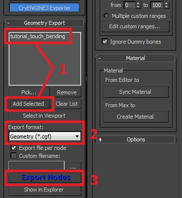
Pic21: Adding the asset to the exporter
Continue to CRYENGINE
We have now finished the setup for the 3dsMax portion of the tutorial. To continue, move to the next page where we configure the material and use the Vegetation Tool to place down some of these touch bending assets.